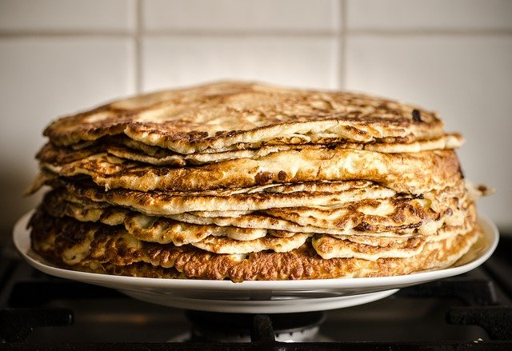
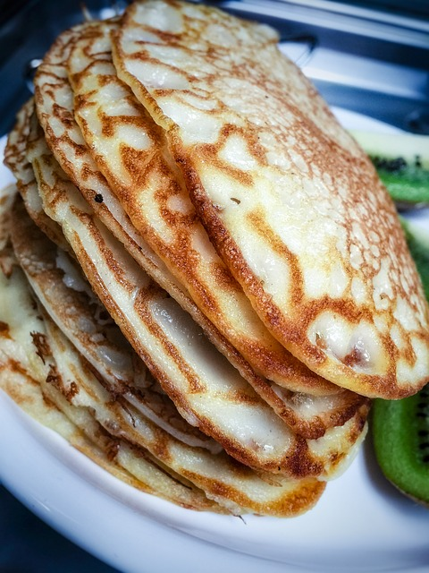

Visst är det gott med pannkakor? Grundreceptet på traditionella, tunna pannkakor gör man genom att blanda mjölk och ägg med mjöl och en nypa salt till en jämn smet. Sedan steker man pannkakssmeten till tunna och goda pannkakor som serveras med allehanda tillbehör. Här hittar du recept på pannkakssmet till vanliga och veganska pannkakor.
*6-7 pannkakor*
1. Vispa ihop ägg, mjölk och vatten i en bunke. Rör ner vetemjöl,salt och smält smör. Vispa allt till en lös smet.
2. Smält smör i en stekpanna och ha ner 1-2 dl pannkakssmet. Stek pannkakorna gyllene på båda sidorna.
1. Blanda mjöl och bakpulver i en stor bunke.
2. Blanda ner sojamjölken samtidigt som du rör runt i smeten.
3. Häll i socker, margarin och salt.
4. Blanda runt smeten, det gör inget om det finns kvar några klumpar, det gör pannkakorna lite fluffigare.
5. Värm stekpannan till ca 3/4 av full värme, lagom temperatur varierar från spis till spis.
6. Ta i margarin i stekpannan och häll 1-1 1/2 dl smet i den.
7. Vänd pannkakan när ovansidan har stelnat och undersidan har fått en fin färg.
8. Lägg upp och ät! Om du vill kan du toppa med t.ex bär.
